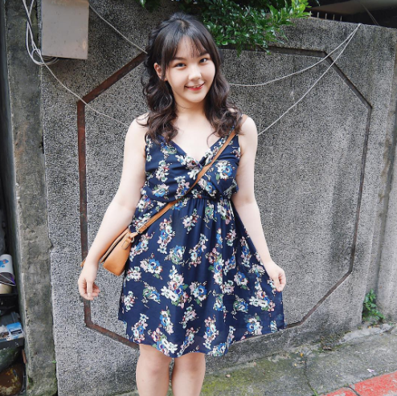

Bạn sở hữu một thân hình mập mạp, kém mảnh mai thon gọn. Bạn cảm thấy tự ti về ngoại hình cũng như khó chọn lựa trang phục. Khó khăn trong việc định hình một phong cách cho mình. Thấu hiểu được nỗi lòng của những cô nàng mũm mĩm, hôm nay chúng tôi xin giới thiệu đến các bạn gái một số bí quyết mặc đồ để trông thon gọn hơn. Giúp bạn tự tin hơn trong cuộc sống.
Màu đen luôn là màu ưu tiên cho người mập, việc lựa chọn một chiếc đầm, váy yếm hai dây màu đen dài qua bắp chân là một gợi ý hay. Bạn có thể kết hợp váy hai dây dài với áo sơ mi cách điệu màu trắng. Hãy chọn áo có chất liệu mềm mại, có điểm nhấn xếp li, bèo nhún ở phần tay áo, cổ áo có thể chọn cổ tròn. Hãy chọn váy có chất liệu mềm mại, không thô cứng để tạo cho bạn một cảm giác nhẹ nhàng, mềm mại mà không cứng nhắc. Có thể kết hợp thêm với một đôi Sneaker nữa, bạn sẽ trông năng động và thoải mái hơn.
Khi phải tham gia một sự kiện quan trọng, hay những buổi tiệc tùng bạn có thể chọn cho mình một chiếc váy ren trắng nhẹ nhàng. Chất vải mềm, chi tiết ren đơn giản, không quá cầu kỳ. Tạo điểm nhấn ở cổ váy và tay váy, chọn một chiếc đầm đến gối, hơi bo phần eo. Nhớ là hơi bo thôi nhé, bạn sẽ trông thật tinh khôi với chiếc đầm ren trắng này. Kết hợp thêm một đôi giày cao gót cùng tone màu, sẽ tôn lên vóc dáng của bạn.
Một set đồ thích hợp đi làm, đi học, đi chơi đó là chân váy Jeans với áo thun. Bạn có thể lựa chọn chiếc áo thun nữ kẻ sọc dọc, hay nhưng chiếc áo màu đen. Kết hợp với chân váy jean có thiết kế đính cúc. Thêm một đôi Sneaker là bạn trông thật năng động, trẻ trung.
Bạn sợ thân hình mập mạp của mình không phù hợp với một màu sáng như màu trắng. Đừng lo, hãy thử Mix đồ theo cách này và đón xem hiệu quả bất ngờ nhé. Một chiếc chân váy trắng, điểm nhấn là hàng cúc màu đen, kết hợp với một chiếc áo sơ mi đỏ kẻ trắng. Set đồ này bạn có thể đi Sneaker hay giày búp bê đều phù hợp.
Chiếc áo voan màu trắng nhẹ nhàng, đơn giản kết hợp với chiếc chân váy dài qua bắp chân. Đây cũng là một gợi ý hay cho những cô nàng yêu thích phong cách Vintage. Có thể chọn một đôi giày cao gót hoặc một đôi Sneaker để kết hợp.
Bạn muốn trông mình thật trẻ trung, năng động, khi đi dạo phố, tụ hội cùng bạn bè có thể lựa chọn những chiếc áo phông in hình ngộ nghĩnh. Kết hợp với một chiếc chân váy jean hoặc chân váy chữ A. Với phong cách này hãy mang một đôi Sneaker nhé.
Thêm một set đồ đơn giản mà phù hợp với mọi người đó là một chiếc áo phông cổ chữ V, kết hợp với chân váy mini và Sneaker. Áo cổ chữ V luôn phù hợp với người mập, giúp bạn khoe được vòng 2 căng đầy, hạn chế khuyết điểm vai to và thô. Chân váy mini mềm mại sẽ giúp bạn che đi vòng 2 quá khổ và hông thô. Giày Sneaker năng động, thoải mái, dễ di chuyển.
Đầm Denim đuôi cá dáng chữ A kết hợp với áo sơ mi trắng voan mỏng. Một sự lựa chọn nữa khi đi chơi, đi hẹn hò. Bạn sẽ là một cô nàng đáng yêu với trang phục này. Chiếc đầm dáng chữ A sẽ che đi vòng 2 và vòng 3 của bạn. Vải Denim không quá cứng mà cũng không quá mềm, sẽ không làm lộ khuyết điểm trên cơ thể của bạn.
Chiếc váy in họa tiết nhẹ nhàng, chất liệu mềm mại thích hợp diện khi hè đến, đi chơi, đi biển…Bạn có thể chọn một chiếc đầm cổ chữ V, bó ở phần eo, nhằm tạo cho người nhìn cảm giác vòng 2 của bạn không quá to, thậm chí còn khá eo ót nữa.
Một chiếc váy yếm in hoa, họa tiết đơn giản, màu tối như: xanh than kết hợp với áo thun dài tay màu sáng. Là dáng váy suông, dài đến bắp chân, chất liệu mềm mại sẽ bạn trông thật thanh thoát, nhẹ nhàng, pha chút đáng yêu tinh nghịch. Với trang phục này hãy kết hợp thêm một đôi Sneaker nhé.
Một chiếc đầm thun, suông tay lỡ màu tím hồng cũng là một lựa chọn cho bạn.
Chân váy midi đã không còn xa lạ với chúng ta, với thiết kế vải voan mỏng, chân váy này mang cho chúng ta cảm giác như những nàng công chúa. Kết hợp thêm một chiếc áo trễ vai lại càng khiến bạn trở nên dịu dàng hơn.
Bạn muốn quay lại tuổi thơ, muốn hack tuổi hãy thử kết hợp yếm bò với áo phông và Sneaker. Một set đồ hack tuổi giúp bạn trông trẻ trung yêu đời.
Màu đen luôn phù hợp với người mập, một chiếc đầm đen có cổ, và điểm nhấn là ở phần cổ sẽ giúp bạn thu hút ánh mắt của mọi người. Họ sẽ tập trung vào bộ trang phục mà bạn mặc.